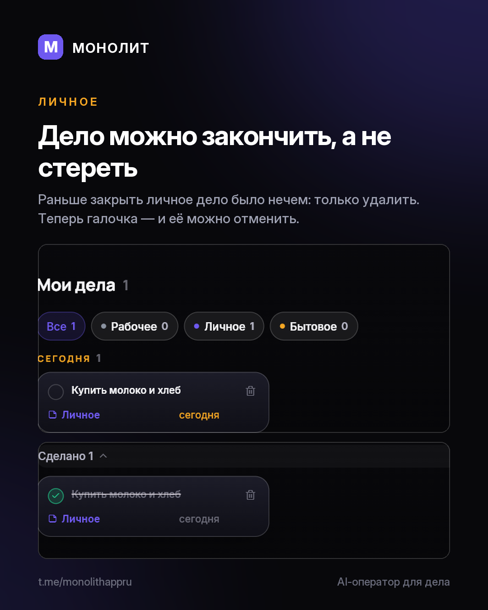

Дневник разработки · 13.08.2026
Дело можно закончить, а не стереть

Раздел «Личное» был самым честным местом в приложении: он показывал ровно столько, сколько внимания ему досталось. Две карточки, «Мои дела 0» и полэкрана пустоты.
Разбираться я начал не с раскладки, а с вопроса «что здесь вообще можно сделать». Ответ оказался неприятным: почти ничего. Дело нельзя было отметить сделанным — только удалить, то есть стереть память о том, что оно было. Срок делу ставил один ассистент, и поправить его руками было нечем. Экран, в котором нечего сделать, нечем и наполнить — пустота была следствием, а не причиной.
Теперь у дела есть срок, и вы ставите его сами — в то же поле, куда его пишет ассистент фразой «купить хлеб завтра», и с тем же напоминанием. Закрывается дело галочкой, и это можно отменить. Сами дела разложены по срокам: просрочено, сегодня, на этой неделе, дальше. Наверху экрана — то, что требует ответа сегодня, а не длина всего списка. Пустой список больше не пустой: «Купить», «Забрать», «Записаться», «Позвонить» — одно нажатие вместо формы.
Ниже — две вещи про вас, а не про заказы. «Мой ритм»: часы за четыре недели и сколько дней прошло без единой отметки. Не «отдыхал», а именно «без отметок» — приложение не знает, работали вы без учёта или отдыхали, и выдумывать не будет. И «Куда уходит время»: заказы с долей и настоящей ставкой часа по каждому. Та самая цифра, которую полезно держать в уме, когда называешь цену.
Заодно в этой версии приехало всё, что делалось после прошлой: заказ рядом с перепиской, долг команде, разложенный по заказам, и ассистент, который считает деньги по факту, а не по бюджетам.
Версия 1.4.23, Windows и Android. Обновление придёт само.
МОНОЛИТ — учёт заказов, клиентов и денег одной фразой. Windows и Android, бесплатная бета.
Скачать Читать канал